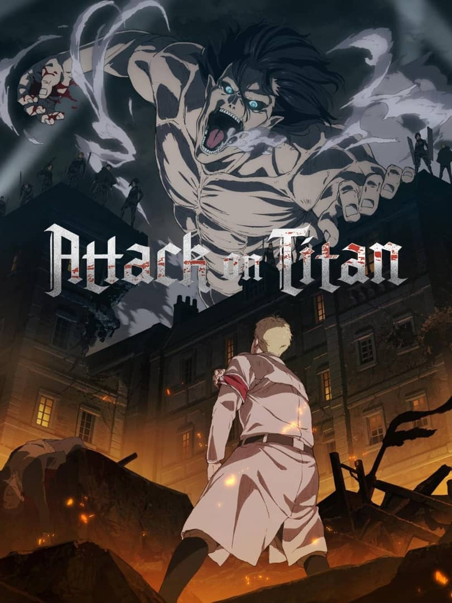

Attack on titan
-
تدور قصة "هجوم العمالقة" حول عالم يعيش فيه البشر داخل مدن محاطة بأسوار ضخمة لحماية أنفسهم من العمالقة، وهم مخلوقات عملاقة تأكل البشر. يركز المسلسل على "إيرين ييغر" و"ميكاسا أكرمان" و"أرمين أرليرت" بعد أن اخترق العمالقة السور الخارجي وتسببوا في تدمير مدينتهم وموت والدة إيرين. يقسم إيرين على الانتقام ويقرر الانضمام إلى فيلق الاستطلاع لمحاربة العمالقة. تتكشف القصة لتكشف عن أسرار العمالقة وعلاقتهم بالبشرية، بالإضافة إلى صراعات سياسية داخلية.
- عدد الحلقات:25
- الحالة: مكتمل
- التصنيف: عسكري،إثارة،اكشن، دراما
- تاريخ العرض: 2013